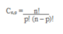
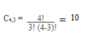

Capítulo 5 – o princípio da contagem e a análise Combinatória no contexto dos processos Produtivos da indústria
Contextualizando
As questões cuja resolução envolve o princípio fundamental da contagem constituem modelos muito utilizados nas indústrias tanto na criação dos processos produtivos como dos códigos de barras.
Os processos produtivos são dinâmicos e constituem modelos de práticas de gestão que possibilitam às organizações gerenciar seus resultados, proporcionando retornos positivos tanto operacionais quanto financeiros.
Os códigos de barras servem como identificação de um produto para os lojistas. São códigos utilizados em vários países cujo uso efetivo levou décadas para ser universalizado. No Brasil, foi formalmente introduzido em 1984.
Que diferentes tipos de agrupamentos existem, o que os diferencia e como o princípio fundamental da contagem é utilizado em sua resolução?
Caro aluno, nesse capítulo, vamos estudar problemas de contagem que usam o princípio multiplicativo que e integram a Análise Combinatória. Vamos resolver muitos problemas com ou sem o uso de fórmulas com o auxílio das árvores de contagem , dos quadros de dupla entrada e da resolução por etapas um forma simplificada de representação.
(RE)CONSTRUINDO CONHECIMENTOS
A Análise Combinatória visa desenvolver métodos que permitam contar - de uma forma indireta - o número de elementos de um conjunto, estando esses elementos agrupados sob certas condições.
Na Análise Combinatória, é importante, conhecer os agrupamentos de diferentes naturezas e sob certas condições possíveis de serem criados a partir de um conjunto de elementos os mais diferenciados, bem como saber quantos são esses agrupamentos que podem ser calculados, usando o princípio fundamental da contagem ou fórmulas que usam fatoriais. Os problemas relacionados à Análise Combinatória são também problemas de contagem.
RELEMBRANDO A HISTÓRIA
Foi a necessidade de calcular o número de possibilidades existentes nos chamados jogos de azar que levou ao desenvolvimento da Análise Combinatória, parte da Matemática que estuda os métodos de contagem. Esses estudos foram iniciados já no século XVI, pelo matemático italiano Niccolò fontana (1500-1557), conhecido como Tartaglia e ampliados por Pierre de Fermat (1601-1665) e Blaise Pascal (1623-1662) matemáticos franceses que muito contribuíram para o desenvolvimento da Matemática.
Vamos resolver problemas envolvendo o princípio da contagem, também chamado princípio multiplicativo e reconhecer que tipos de representação podemos utilizar para facilitar a sua resolução..
Observe o problema a seguir e sua resolução:
Há quatro entradas ligando as cidades A e B e três ligando B e C. De quantas maneiras se pode ir da cidade A até a cidade C, passando por B?
Usando o diagrama de árvore:
Observando diagrama de árvore representado acima, verificamos que, para ir da cidade A até a cidade B, há quatro caminhos possíveis e que da cidade B até a cidade C, há 3 caminhos possíveis. Assim, para cada um dos 4 caminhos para ir da cidade A até a cidade B, há três diferentes caminhos para ir da cidade B até a cidade C. Assim, há 3 x 4 = 12 caminhos para ir da cidade A até a cidade C, passando pela cidade B
Os diagramas de árvore prestam-se para representar a resolução de problemas de contagem com dois ou mais conjuntos ou com um conjunto com duas ou mais etapas.
Usando a representação por etapas ( uma forma simplificada de resolução):
Observando a representação por etapas, , verificamos que, na primeira etapa, é 4 o número de possibilidades de ir da cidade A até a cidade B e, na segunda etapa é 3 o número de possibilidades de ir da cidade B até a cidade C. Assim, para cada uma das 4 possibilidades de ir da cidade A até a cidade B, há três diferentes possibilidades de ir da cidade B até a cidade C. Assim, há 3 x 4 = 12 possibilidades de ir da cidade A até a cidade C, passando pela cidade B
A representação por etapas presta - se para a resolução de problemas com de contagem com dois ou mais conjuntos ou com um conjunto com duas ou mais etapas.
Para resolver o mesmo problema, pode-se usar, também, um quadro de dupla entrada.
No quadro, na primeira linha, observa-se que, utilizando o caminho 1 de A até B, haverá três possibilidades de seguir de B até C uma pelo caminho 1, outra pelo caminho 2 e ainda outra pelo caminho 3 e, assim, sucessivamente nas quatro linhas, percebendo que são 4 x 3 = 12 caminhos diferentes para ir da cidade A até a cidade C, passando pela cidade B.
Os quadros de dupla entrada prestam-se para representar problemas de contagem que relacionem elementos de somente dois conjuntos ou os que relacionam os elementos de um conjunto com somente duas etapas.
Outra representação:
Pode-se representar de uma forma pessoal, conforme o desenho a seguir, contando os caminhos percorridos, acompanhando com o lápis, de tal forma que para cada um dos 4 caminhos possíveis de A até B, verifiquem-se 3 caminhos possíveis de B até C, perfazendo 4 X 3= 12 caminhos da cidade A até a cidade C, passando pela cidade B.
Fatorial é um número natural inteiro positivo que é representado por n!
É um número calculado pela multiplicação desse número por todos os seus sucessores até
chegar ao número 1. Note que nesses produtos, o zero (0) é excluído.
Vejamos alguns exemplos numéricos.
Fatorial de 0: 0! (lê-se 0 fatorial) e por definição , é igual a 1.
0! = 1
Fatorial de 1: 1! (lê-se 1 fatorial) e , por definição é igual a 1
1! = 1
Fatorial de 2: 2! (lê-se 2 fatorial)
2! = 2 . 1 = 2
Fatorial de 3: 3! (lê-se 3 fatorial)
3! = 3 . 2 . 1 = 6
Fatorial de 4: 4! (lê-se 4 fatorial)
4! = 4. 3 . 2 . 1 = 24
Fatorial de 5: 5! (lê-se 5 fatorial)
5! = 5 . 4 . 3 . 2 . 1 = 120
Fatorial de 6: 6! (lê-se 6 fatorial)
6! = 6 . 5 . 4 . 3 . 2 . 1 = 720
Fatorial de 7: 7! (lê-se 7 fatorial)
7! = 7 . 6 . 5 . 4. 3 . 2 . 1 = 5040
Fatorial de 8: 8! (lê-se 8 fatorial)
8! = 8 . 7 . 6 . 5 . 4. 3 . 2 . 1 = 40320
Fatorial de 9: 9! (lê-se 9 fatorial)
9! = 9 . 8 . 7 . 6 . 5 . 4. 3 . 2 . 1 = 362.880
Fatorial de 10: 10! (lê-se 10 fatorial)
10! = 10 . 9 . 8 . 7 . 6 . 5 . 4. 3 . 2 . 1 = 3.628.800
Generalizando, sendo n um número natural qualquer o seu fatorial é representado por:
n! = n . (n – 1) . (n – 2) . (n – 3)... 3.2.1
Obs: O número fatorial também pode ser representado da seguinte maneira:
5!
5 . 4!;
5 . 4 . 3!;
5 . 4 . 3 . 2!
Esse processo é muito importante quando se utiliza a simplificação de números fatoriais.
Você sabia?
O QUE DIFERENCIA A ORDEM E NATUREZA NOS AGRUPAMENTOS
Dois agrupamentos se diferenciam pela ordem, quando seus elementos são os mesmos, nomeados em ordens diferentes.
Exemplo: o número 231 se diferencia do número 213 (mesmos algarismo em diferenteordem).
Dois agrupamentos se diferenciam pela natureza, quando pelo menos um elemento de um é diferente dos elementos do outro.
Exemplo: 213 e 214 se diferenciam pela natureza de seus elementos, porque o algarismo 3 do número 213 não é algarismo do número 214 e o algarismo 4 do número 214 não é elemento do número 213.
Observação: Comparam-se dois a dois os a grupamentos de uma situação –problema de Análise Combinatória quando se quer verificar se eles se diferenciam somente pela ordem, omente pela natureza de seus elementos ou pela ordem e pela natureza de seus elementos.
OS PROBLEMAS DE CONTAGEM
Vamos resolver outros problemas de contagem:
Agora, vamos resolver os 6 problemas propostos a seguir que envolvem os conceitos de Análise Combinatória. Leia-os com atenção e tente resolvê-los, procurando utilizar uma das diferentes formas de representação apresentadas ou outras que você mesmo pode criar.
Depois de resolvê-los, confira os resultados os seus resultados com os problemas resolvidos para, então, prosseguir explorando a seção (Re)construindo conhecimentos. É importante que você se empenhe para resolver os problemas propostos para prosseguir os estudos de Análise Combinatória.
Resolva os problemas:
1.Com três quadrados de cores diferentes (amarelo, azul e vermelho) e três triângulos de cores diferentes (amarelo, azul e vermelho). Quantas casinhas diferentes podemos fazer? Observe os materiais.
2.Temos algumas placas de azulejo com os algarismos 1, 2, 3 e 4 escritos um em cada placa, conforme modelos a seguir:

Quantas casas de um condomínio podemos numerar, usando três placas de azulejo? 3.Temos algumas placas de azulejo com os algarismos 1, 2 e 3 escritos um em cada placa, conforme modelos a seguir:
Quantos números diferentes podemos compor, usando três placas de azulejo?
4.Com os algarismo 3, 4, 5 e 6 , quantos números diferentes de 3 algarismos podemos compor?
5. Com 4 frutas diferentes, laranja, banana, mamão e pera, quantos tipos de sucos podemos fazer com 3 frutas diferentes?
6. Com os números 1, 2, 3, 4, 5, quantos números de dois algarismos diferentes podemos escrever?
Conferindo as respostas.
Agora que os problemas estão resolvidos, vamos conferir as respostas, observando as diferentes representações utilizadas na sua resolução:
Problema 1: Com três quadrados de cores diferentes (amarelo, azul e vermelho) e três triângulos de cores diferentes (amarelo, azul e vermelho). Quantas casinhas diferentes podemos fazer?
Resposta: Podemos fazer 9 casinhas diferentes.
Quadro de dupla entrada e diagrama de árvore
Observando o quadro de dupla entrada, o diagrama de árvore e a representação por etapas, verificamos que, com três quadrados e três triângulos, podemos desenhar 9 casinhas diferentes, fazendo o produto 3𝑥3 = 9.
Problema 2: Temos algumas placas de azulejo com os algarismos 1, 2, 3 e 4 escritos um em cada placa.Quantas casas de um condomínio podemos numerar, usando três placas de azulejo com números diferentes?
Resposta: Podemos numerar 24 casas.
Diagrama de árvore:
Representação por etapas:
Verificamos no diagrama de árvores e na representação por etapas que podemos numerar 24 casas com três placas diferentes de azulejo numeradas com os algarismos de 1 a 4 sem repetir algarismos nos números das casas, fazendo 4 x 3 x 2 = 24
Problema 3: Temos algumas placas de azulejo com os algarismos 1, 2, 3 escritos um em cada placa. Quantos números diferentes podemos compor, usando duas placas de azulejo com algarismos diferentes?
Resposta: Podemos fazer 6 números diferentes .
Diagrama de árvore
Representação por etapas
Verificamos no diagrama de árvore e na representação por etapas que podemos compor 6 números diferentes sem repetir algarismos, fazendo:
4.Com os algarismos 1, 2, 3, 4 quantos números diferentes de 3 algarismos podemos compor?
Resultado: Podemos compor 64 números diferentes
Diagrama de árvore
Verificamos no diagrama de árvore e na representação por etapas que podemos compor 64 números diferentes porque podemos repetir algarismos em um número da seguinte forma: 4 x 4 x 4 = 64 números diferentes
5. Com 4 frutas diferentes, laranja, banana, morango e pera, quantos tipos de sucos podemos fazer com 3 frutas diferentes?
Resposta: Podemos fazer 4 tipos diferentes de suco.
6. Com os números 1, 2, 3, 4, 5, quantos números de dois algarismos diferentes podemos escrever?
Observação: Nessa situação, um suco de laranja, banana e morango é o mesmo que um suco de laranja, morango e banana, logo, dois agrupamentos quaisquer só se diferenciam pela natureza dos seus elementos e nunca pela ordem. Um suco diferente de banana, laranja e morango é, por exemplo, um suco de laranja, morango e pera variando pelo menos por uma fruta.
Resposta: Podemos fazer 4 sucos.
Diagrama de árvore
Verificamos no diagrama de árvore que, que dos 24 sucos que poderíamos compor somente 4 são diferentes ( os que estão nos retângulos). Os demais (que não estão nos retângulos) são repetidos. Assim, de cada 6 sucos encontrados em cada ponta de galho da árvore só vale 1.
Observe o quadro a seguir e verifique comparando-o com a árvore, que de cada 6 agrupamentos, somente vale 1.
6. Com os algarismos 1, 2, 3, 4, 5, quantos números de 2 algarismos diferentes podemos escrever?
Resposta: Podemos fazer 20 números com algarismos diferentes.
Diagrama de árvore
Representação por etapas
Verificamos no diagrama de árvore e na representação por etapas que podemos compor 20 números diferentes com dois algarismos diferentes utilizando os algarismos 1, 2, 3, 4, 5, fazendo: 5 x 4 = 20 números diferentes
Os problemas trabalhados são problemas de contagem que foram resolvidos sem o uso de fórmulas.
RETOMANDO...
Os problemas chamados especificamente de problemas de contagem, tratam dos agrupamentos dos elementos de 2 ou mais conjuntos ou dos agrupamentos que envolvem os elementos de apenas um conjunto, considerando a forma como esses elementos se agrupam, classificam-se em Arranjos, as Permutações e as Combinações.
Nos problemas de Análise Combinatória o que efetivamente importa são os agrupamentos mas quantos agrupamentos são formados
ARRANJOS
Vamos, agora, aprender o que são Arranjos, reconhecer a fórmula e resolver problemas.
Arranjos são agrupamentos n elementos tomados p a p nos quais a ordem em que os elementos estão dispostos nos agrupamentos faz a diferença se os compararmos 2 a 2.
Assim, os arranjos são distintos entre si pela ordem ou pela natureza de seus elementos.
Existem dois tipos de Arranjos:
– Arranjo simples
– Arranjo com repetição
Nos problemas 2 e 6 trabalhamos com os agrupamentos que chamamos de arranjos simples. No problema 2, relacionamos os elementos de um conjunto, o conjunto dos algarismos 1, 2, 3, 4, considerando que o número de cada casa deveria ter somente 3 algarismos diferentes. Assim, usamos um único conjunto, fazendo agrupamentos em que o número de elementos dos agrupamentos é menor do que o número de elementos do conjunto. Comparando os agrupamentos dois a dois, verificamos, por exemplo, que o número 324 e o número 342 se diferenciam pela ordem que os algarismos estão colocados no número. Se compararmos o número 214 e o número 312 veremos que eles se diferenciam pela natureza de seus elementos, isto é no número 214 não aparece o algarismo 3 que está no número 312 e que, no número 312, não aparece o algarismo 4 que está no úmero 214. No problema 6, agrupamos 5 elementos dois a dois em que o número de elementos do conjunto (n) é maior do que o número de elementos (p). Esse também é um problema de arranjo simples em que, os elementos comparados 2 a 2 ora variam na natureza (exemplo, 13 e 23) ora variam na ordem (12 e 21)
Vejamos um exemplo de Arranjo simples, aqueles que não podem ter elementos repetidos.
Consideremos os elementos 1, 2, 3. A partir desse número n de elementos, vamos formar todos os números de dois algarismos distintos formandos números de 2 algarismos (tomados p a p em que é 2).
Observe a árvore de possibilidades:
Observe que as possibilidades dos números formados como 2 algarismos distintos (os algarismos não podem ser repetidos ), na primeira posição temos 3 algarismos e, na segunda, somente a possibilidade de 2. Então, são 3 x 2 = 6 possibilidades ou seis números.
Usando uma forma simplificada de resolução (resolução por etapas):
Os agrupamentos de 3 elementos 1, 2, 3 tomados 2 a 2 são 6: 12, 13, 21, 23, 31, 32.
Se compararmos esses números dois a dois esses seis números, veremos que se diferenciam pela ordem dos elementos 12 ≠ 21 (ordem), 12 ≠ 13 (natureza)
VAMOS PRATICAR...
5. Quantos números de dois algarismos diferentes (distintos) podem ser formados, usando os elementos do conjunto {1,2,3}?
6. Em um campeonato de futebol participam 20 times. Quantos resultados são possíveis para os três primeiros lugares?
7. Sete funcionários de uma firma são candidatos para ocupar os cargos de presidente e tesoureiro do Centro Social. Sabendo que os 7 funcionários dão candidatos aos dois cargos, de quantas maneiras podem ser os resultados finais?
8. Numa prova de natação, há 10 competidores. Somente os três primeiros receberão medalhas. De quantas formas diferentes, os 10 nadadores poderão se colocar nos três lugares do pódio?
Vejamos agora Arranjos com repetição em que os elementos podem ser repetidos.
No problema 4, relacionamos os elementos do conjunto A={3, 4, 5, 6} agrupando-os 3 a 3, de tal modo que todos os números formados sejam diferentes. Como os algarismos podem se repetir, temos números com 121 e 131 em que o 2 não aparece no 131 e o 3 não aparece no 121 logo, comparando-os, eles têm números de naturezas diferentes. Temos, também, números com 234 e o 432 que tem os mesmos algarismos, as se diferenciam pela ordem dos algarismos no numero e temos números como o 111 ou o 222. Esses agrupamentos são arranjos com elementos repetidos.
Consideremos, agora, outro problema. A partir de um conjunto de com um determinado número de n elementos, (1, 2, 3) , vamos formar todos os números de dois algarismos, formandos números de 2 algarismos (tomados p a p em que é 2).
Observe que, na questão proposta, não indica que os algarismos, no número, devem ser distintos. Assim tanto teremos os números 11 e 22, teremos os números 12 e 21.
Observe a árvore de possibilidades que representa o princípio da contagem:
Usando uma forma simplificada de resolução(representação por etapas :
A fórmula do arranjo com repetição: Ar (m, p) = mp em que m é o número de elementos de que dispomos e p é número de elementos que terá no arranjo.
Veja outros problemas, resolvidos com o uso de fórmulas: Quantos números de 3 algarismos diferentes (distintos) podem ser formados, usando os algarismos 1, 2, 3, 4, 5 ?
Sabemos que m = 5 e p = 3
Ar = mp = 53 = 5 x 5 x 5 = 125
Por exemplo: seja C = (A, B, C, D). Os arranjos com repetição desses 4 elementos tomados 2 a 2 formam 16 grupos onde encontramos elementos repetidos em cada grupo, pois todos os agrupamentos estão no conjunto:
Ar = (AA, AB, AC, AD, BA, BB, BC, BD, CA, CB, CC, CD, DA, DB, DC, DD)
Nesse caso, m = 4 e p = 2
Ar = mp = 42 = 4 x 4 = 16
COMBINAÇÕES
Combinação é um tipo de agrupamento formado com os elementos de um conjunto em que os elementos dos agrupamentos diferenciarem apenas pela sua natureza dos seus elementos.
O problema 5 que resolvemos é um exemplo de problema de combinação. No problema 5, agrupamos os elementos de um conjunto de quatro frutas A={Laranja , banana, morango e pera} para fazer sucos diferentes com 3 frutas. Como o suco com banana, laranja e pera é o mesmo do que o suco pera, laranja e banana , dos dois agrupamentos vale somente um. Nesse caso, a ordem dos elementos nos agrupamentos os diferencia. Assim, das 6 possibilidade que se tem no diagrama de árvore somente 4 são diferentes: as 24 possibilidades 94 reduziram-se a 4 sucos diferentes. Esses agrupamentos que só se diferenciam pela natureza dos elementos são as combinações.
Vejamos outro exemplo: Considerando o conjunto B ={A,B,C,D} formados por 4 pontos que não pertence, à mesma reta. Qual a quantidade de triângulos que podemos formar?
Resolução do problema
formar triângulos utilizando 3 pontos não colineares. Se destacarmos dois agrupamentos formados teremos: ABC e BCA, esses são triângulos formados com os mesmos pontos, mas em ordens diferentes que torna os triângulos iguais. Portanto, os agrupamentos formados nesse exercício são combinações.
As combinações podem ser consideradas um tipo particular de arranjo simples, pois os agrupamentos formados nos arranjos são diferenciados pela ordem e pela natureza dos seus elementos. A combinação são os agrupamentos diferenciados apenas pela natureza de seus elementos. Considerando o exemplo acima veja todas as possibilidades de triângulos formados com os quatro pontos não colineares:
Percebemos que há vários agrupamentos que se diferem pela ordem de seus elementos, esses representam o mesmo triângulo, por isso que consideramos esse exercício como sendo uma combinação simples, assim a quantidade de combinações simples que os 4 pontos não colineares (A,B,C,D), tomados 3 a 3 irão formar será 4, pois os seus agrupamentos se diferem pela natureza de seus elementos e não pela ordem. Para encontrar essa q
Para encontrar essa quantidade de agrupamentos formados em uma combinação, utilizamos a seguinte fórmula:
Percebemos que há vários agrupamentos que se diferem pela ordem de seus elementos, esses representam o mesmo triângulo, por isso que consideramos esse exercício como sendo uma combinação simples, assim a quantidade de combinações simples que os 4 pontos não colineares (A,B,C,D), tomados 3 a 3 irão formar será 4, pois os seus agrupamentos se diferem pela natureza de seus elementos e não pela ordem.
Para encontrar essa quantidade de agrupamentos formados em uma combinação, utilizamos a seguinte fórmula:

em que, n é a quantidade de elementos de um conjunto p é um número natural menor ou igual a n, que representa a quantidade de elementos que irão formar os agrupamentos. Substituindo os dados acima na fórmula teremos: No caso vamos calcular C4,3 = 4 em que n = 4 e p = 3
Substituindo na fórmula temos:

VAMOS PRATICAR...
17. Quantas comissões de 3 pessoas podemos formar num grupo de 7 pessoas?
18. Em um plano existem quatro pontos distintos dos quais não há três colineares. Quantas retas ficam determinadas?
19. Quantas diagonais tem um hexágono? Lembre que diagonais são segmentos de reta que ligam dois vértices não consecutivos de uma figura geométrica plana.
20. Quantos sopas diferentes podemos fazer com 5 ingredientes (cenoura, batata, abóbora, couve e milho), usando 3 ingredientes, sendo que dispomos de 2 tipos de caldos: um de carne e outro de galinha.?
PRATICANDO...AÇÃO E REFLEXÃO
1.Quantos números de 3 algarismos distintos, podemos compor com os algarismos do conjunto A= ( 1, 2, 3, 4, 5, 6)?
2.Entre as cidades A e B há seis estradas, e entre as cidades B e C há quatro estradas. Não há estrada ligando diretamente A e C.
a) De quantas maneiras diferentes pode-se ir de A até C, passando por B?
b) De quantas maneiras pode-se ir de A até C, passando por B e voltar de C até A, passando por B,
sem usar na volta as estradas usadas na ida?
3.Quantas equipes de trabalho poderão ser formadas num grupo de dez indivíduos, devendo cada equipe ser constituída por um coordenador, um secretário e um digitador, sabendo que os dez indivíduos são digitadores?.
4.Um técnico de um time de voleibol possui a sua disposição 15 jogadores que podem jogar em qualquer posição. Sabendo que, numa equipe de voleibol, tem 6 jogadores, de quantas maneira ele poderá escalar sua equipe?
5.Um amigo mostrou-me 5 livros diferentes de matemática e 7 livros diferentes de física e permitiu-me escolher um de cada. De quantas maneiras esta escolha pode ser feita?
6) De quantas maneiras diferentes podemos organizar num fileira horizontal 6 fotos de pessoas diferentes em um painel?
7) Com duas letras A e B e 5 números diferentes, quantas placas de bicicleta que tenham uma letra e 4 algarismos podemos compor?
8) De quantas formas diferentes, podemos dispor as letras da palavra Pilates?
O QUE APRENDI
Nesse capítulo, foram trabalhadas as formas de calcular o número de agrupamentos de números, de letras, de cores, de pontos, obedecendo a diferentes condições, chamados arranjos, permutações e combinações. Usamos o princípio fundamental da contagem e suas diferentes representações. Aprendemos o que é um fatorial.
No esquema a seguir, temos diferentes tipos de agrupamentos diferenciados a partir da natureza ou da ordem que os compõem, bem como suas fórmulas de cálculo.